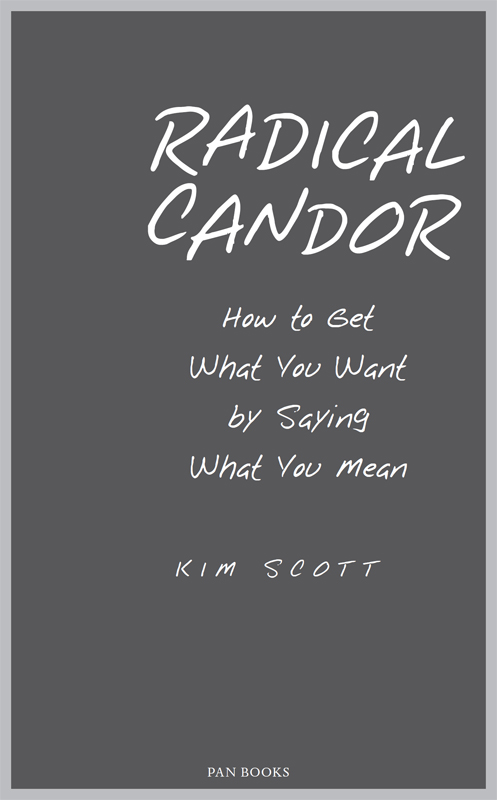

How to Get What You Want
by Saying What You Mean

Kim Scott ran sales teams at Google, designed the management course at Apple University and coached the CEOs of Dropbox, Twitter and Qualtrics. The book starts with her worst failure as a boss: an employee she liked so much she never told him his work was bad, until she had to fire him. Her answer is a simple frame. Show that you care about the person, and say the hard thing clearly, at the same time.
2017 · St. Martin’s Press · Part I: the philosophy (relationships, guidance, team, results) · Part II: tools and a step-by-step start
The story that started it
At her start-up Juice, Kim hired “Bob”: kind, funny, liked by everyone, and doing terrible work. When he handed in a document that made no sense, she said it was “a good start” and fixed it herself. She did that for ten months. The team covered for him, standards slipped, and her own annoyance grew until she no longer thought the work was bad but the person was. When she finally let him go over coffee, he asked: “Why didn’t you tell me? Why didn’t anyone tell me? I thought you all cared about me!”
Her point: being nice was not kind. Not telling Bob cost him his job, and it cost the team its trust in her judgment.
The frame
One line is Care Personally: treat people as whole human beings, not only as workers, and bring your own whole self too. The other is Challenge Directly: tell people when their work is not good enough, make the hard calls, and invite them to challenge you back. Put both together and you get Radical Candor. Miss one or both and you land in one of the other three corners. Tap a corner.
Two things Scott insists on. The corners describe what you said, never who you are; everyone visits all four. And candor is measured at the listener’s ear, not the speaker’s mouth: what feels direct to you may land as harsh, or as nothing at all.
The test you can run in your head
Scott’s simplest way to tell the corners apart. Alex walks out of the restroom, fly open, shirt tail sticking out. A meeting starts in two minutes. What do you do?
The bigger, scarier versions (a missed target, a bad habit, a body-odour problem) work the same way. Imagine it is only the fly, and “just say it”.
Guidance, the atomic unit of management
Scott calls praise and criticism “guidance”. A boss has to get it, give it and encourage it between team members. She is clear about the order: ask for criticism of yourself first. You learn a lot, you feel how it lands, and people see that you mean it.
Scott’s rules: acknowledge the feeling (“I can see you’re frustrated”) and keep asking until you understand. Never say “don’t take it personally” or “don’t be sad”; work is personal and the order only makes it worse. Tears don’t mean you did something wrong. If you can’t cope, say so: “I’m sorry you’re upset. Let me get you some water, and let’s come back to this, because I can see it matters.” And when you are the one in a bad mood, tell the team it isn’t about them.
Team
An Apple leader told Scott that a team needs both. Superstars are on a steep growth curve: they want new challenges and will outgrow the job. Rock stars are on a gentle curve: excellent, happy in their craft, the rock the team stands on. Both are equally valuable, and people move between the two at different times of life. The boss’s job is to know which one each person wants to be right now.
Results
At Google, Scott reorganised her team quickly and alone. It made sense, and three of her five direct reports left. Sheryl Sandberg: you were spinning a long rope; from the middle it feels slow, but at the end people are hanging on for dear life. Steve Jobs “always got it right” not because he was always right, but because he insisted people prove him wrong: “It was your job to convince me, and you failed.”
The toolkit
| Tool | What it is |
|---|---|
| One-on-ones | Their agenda, not yours. Good questions: “What keeps you up at night?” “What are you working on that you don’t want to?” “What are you not working on that you want to?” Warning signs: cancellations, only good news, never a criticism of you. |
| Staff meeting | Twenty minutes of numbers, fifteen minutes writing and reading updates in silence, thirty minutes naming the week’s big decisions and debates (not settling them). |
| Big debate / big decision | Separate meetings, so nobody is confused about whether today ends in a decision. |
| Skip-level meetings | Once a year, ask your managers’ teams what their boss could do better. Take the notes yourself, share them with the manager straight away. |
| “Whoops the Monkey” | A stuffed toy for whoever tells the story of their own mistake that week. Automatic forgiveness, shared lesson. |
| No back-stabbing | Don’t let one person complain to you about another. Send them to talk directly, or sit down with both. |
| Think time | Block it in the calendar and defend it. |
Ask for guidance first. Then ask permission: “Would it be helpful if I told you what I think about X?” Start small and watch how it lands. If you’ve argued and lost, Andy Grove’s rule applies: listen, challenge, commit. You can then tell your team honestly: “I argued, here is what I said, here is why we’re doing it anyway.”
What I take from it
“It’s not mean, it’s clear!” — a stranger at a crosswalk, after telling Scott her dog would die if she didn’t teach it to sit